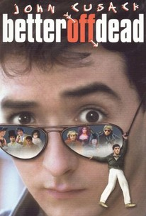

| Movie | Better Off Dead |
|---|---|
| Director | Savage Steve Holland |
| John Cusack | Lane Meyer |
| Diane Franklin | Monique Junot |
| Rating | PG |
| Summary | John Cusack plays Lane Meyer, a teenager who thinks he is "better off dead" after being dumped by his girlfriend for the captain of the ski team. While making friends with Monique (Diane Franklin), the French exchange student living next door, Lane decides life maybe worth living after all. |
| Link | Better Off Dead |
| Poster |  |